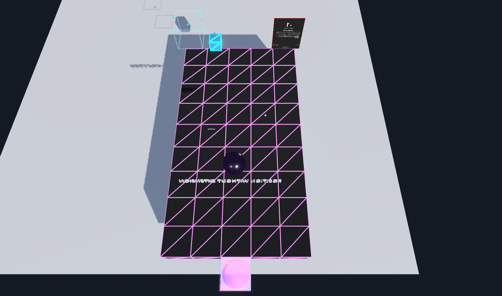
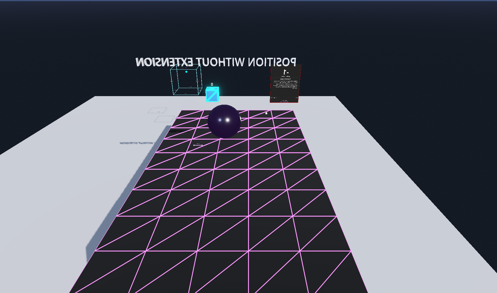
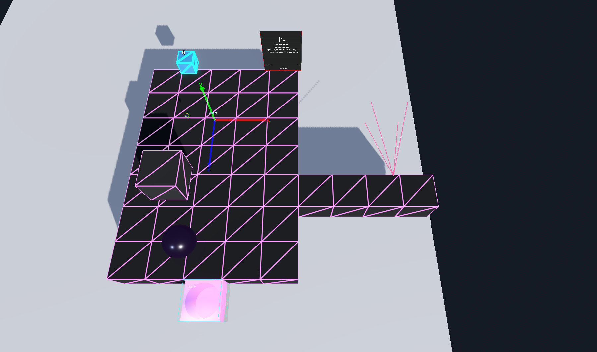
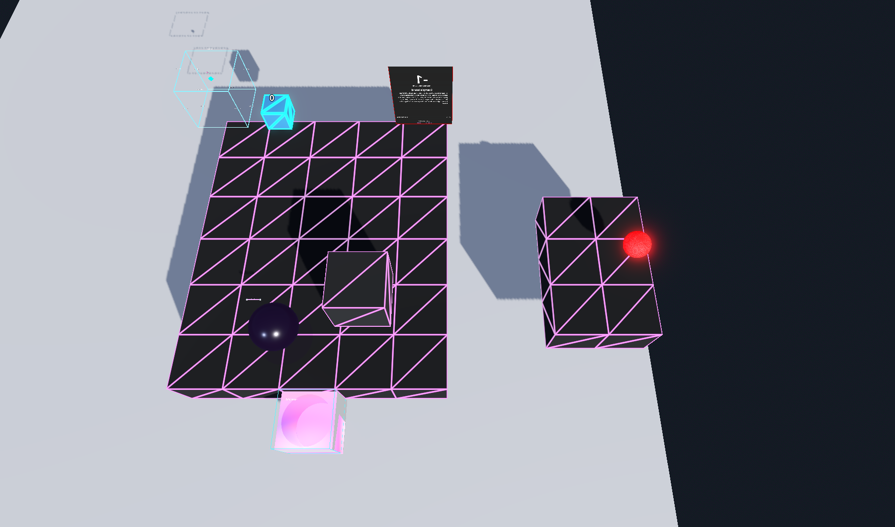
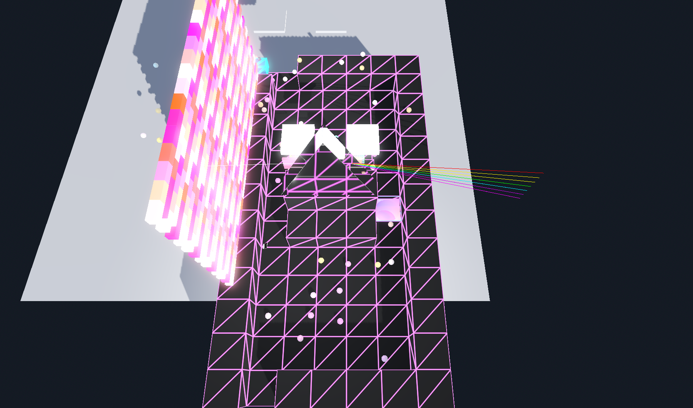
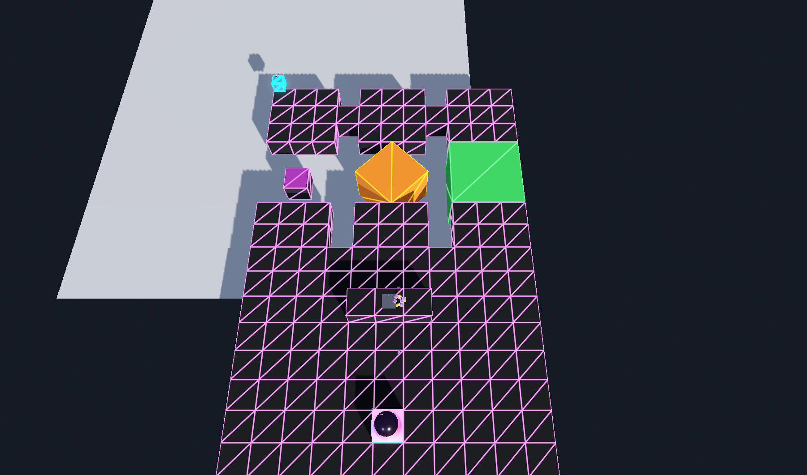

30 March 2026
Three exercises, two real sequences, and the distance between them
Before rebuilding the 11 primitives maps, I needed to prove I could build at all. So I made three example maps from scratch, then studied real maps from the Color and Transformation sequences to understand what makes them work — or not work. The gap between my exercises and the real thing is where the learning lives.
Every map tells a story through five spatial phases. The player doesn't read these — they walk them.
Entry Spawn point + orientation. The player appears, faces a direction.
Teaching The main artifact. One thing to understand.
Exploration Related artifacts to the sides. Choice, not obligation.
Reflection Dark sphere, floating text. The space contracts.
Exit Teleporter on void. The floor drops away.

Godot render: 5×10 corridor, spawn top, exit bottom

Player's view walking south through the corridor
Nine rows of floor, one row of void. Four artifacts in a straight line. The map builder's AI simulation walked it in 14 steps, found all 4 artifacts, reached the teleporter. PASS.
Structure: Utilities: Interactables: 1 1 1 1 1 ← entry . sp . . an . . . . . 1 1 1 1 1 . . . . . . . . . . 1 1 1 1 1 ← teach . . . . . . . origin . . 1 1 1 1 1 . . . . . . . . . . 1 1 1 1 1 ← explore . . . . . . line . point . 1 1 1 1 1 . . . . . . . . . . 1 1 1 1 1 ← reflect . . ds . . . . dark_sphere . . 1 1 1 1 1 . . 3t . . . . . . . 1 1 1 1 1 . . . . . . . . . . 0 0 0 0 0 ← exit . . t . . . . . . .
Entropy: 0.38 (moderate). Design pattern: open-field. 90% walkable, 0 walls. This is the simplest valid map possible.

L-shaped map: main corridor left, east wing branching right at row 4
Main corridor plus an east wing. My first attempt used height 2 for the wing with a ramp at (4,4). It failed — I didn't understand how ramps connect heights. Fixed by making everything height 1.

Main platform left, unreachable island right. The red sphere glows alone.
A main platform and an unreachable island across a void gap. The sphere on the island is visible but untouchable — a deliberate design choice, not a bug. The validator flags it as unreachable. The designer says: that's the point.
My exercises proved I could follow the rules. But real maps break rules for reasons. I loaded two real sequences — Color and Transformation — into the map builder to see what they do differently.

Godot: brick wall glowing left, prism shooting rainbow right, color tools center
1 1 2 2 2 2 2 ← h=2 walls 2 1 1 1 1 1 2 surround 2 1 1 1 1 1 2 the h=1 2 1 1 1 1 1 2 walkable 2 1 1 1 1 1 2 interior 2 1 2 2 2 1 2 ← inner wall 2 1 3 3 3 0 2 ← h=3 + void 2 1 2 2 2 1 2 ← inner wall 2 1 1 1 1 1 2 2 1 1 1 1 1 2 2 1 1 1 1 1 2 2 1 1 1 1 1 2 2 1 2 2 2 2 2 ← sealed
The AI simulation reached the teleporter but only found 4/9 artifacts. Five artifacts sit on h=2 wall tiles or behind h=2 walls that the simulation can't cross. The map uses walls as architecture — the player looks over them, reaches through them in VR. The editor's 2D pathfinding doesn't understand that VR arms extend past walls.
This is the first real lesson. Color_Nails isn't broken — it's a room. The h=2 tiles are walls. The h=1 corridor is the path. The h=3 section at row 6 is a raised display shelf. The validator sees disconnected regions; the player sees a nail salon with shelves and a counter.

Godot: three colored cubes (translate/rotate/scale) hover above separated platforms
1 1 1 0 1 1 1 0 1 1 1 ← 3 platforms 1 1 1 1 1 1 1 1 1 1 1 ← bridge 1 1 1 0 1 1 1 0 1 1 1 ← 3 platforms 0 0 0 0 0 0 0 0 0 0 0 0 0 0 0 0 0 0 0 0 0 0 ← THE VOID 0 0 0 0 0 0 0 0 0 0 0 1 1 1 0 1 1 1 0 1 1 1 1 1 1 0 1 1 1 0 1 1 1 1 1 1 1 1 1 1 1 1 1 1 ...open field below...
The spawn sits on the upper platform, but three rows of void separate it from the lower field where the artifacts live. Transport cubes (tc, rc, sc) in the void are meant to carry the player across. The editor sees a canyon; the gameplay has a bridge.
Trans_Introduction maps the concept onto the space. Three platforms at the top represent the three transformation types — translate, rotate, scale. Each gets a transport cube in the void. The player literally experiences translation by being transported across a gap. The lower field is for exploration after that aha moment.
The validator says this map is 78% unreachable. The map says: that's the teaching. Crossing the void IS the lesson.
| Property | My Exercises | Color_Nails | Trans_Introduction |
|---|---|---|---|
| Height range | 0–1 only | 0, 1, 2, 3 | 0, 1, 2 |
| Walkable % | 90% | 53% | 75% |
| Design pattern | open-field | exploration-hub | open-field + chasm |
| Walls | 0 | 42 | 3 |
| Gameplay mechanics | Walk only | VR reach over walls | Transport cubes |
| Validator verdict | PASS | FAIL (5 unreachable) | FAIL (2 regions) |
| Actually broken? | No | No — it's a room | No — transport cubes bridge |
Layer alignment, teleporter on void, five-phase narrative structure
Ramp without understanding, flat height = timid design
Height IS architecture. It's not floor level — it's walls, shelves, chasms
Now I study the Transformation and Color sequences in depth. Not to fix them — to understand how height, void, transport, and VR reach create spatial narratives that no 2D editor can fully capture. Then I can rebuild the 6 broken primitives maps with that understanding.
The primitives maps should be the simplest maps in the system. But "simple" doesn't mean "flat." It means the complexity serves one idea, not many.